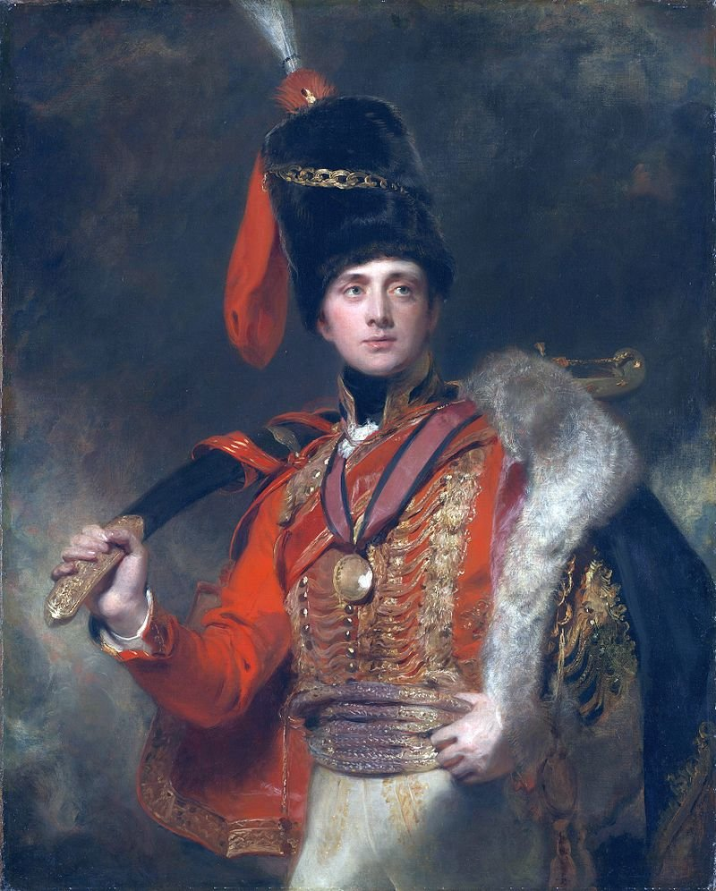
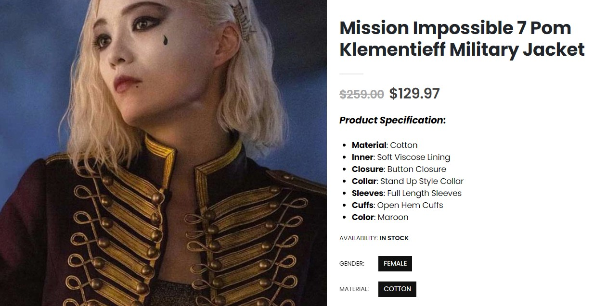
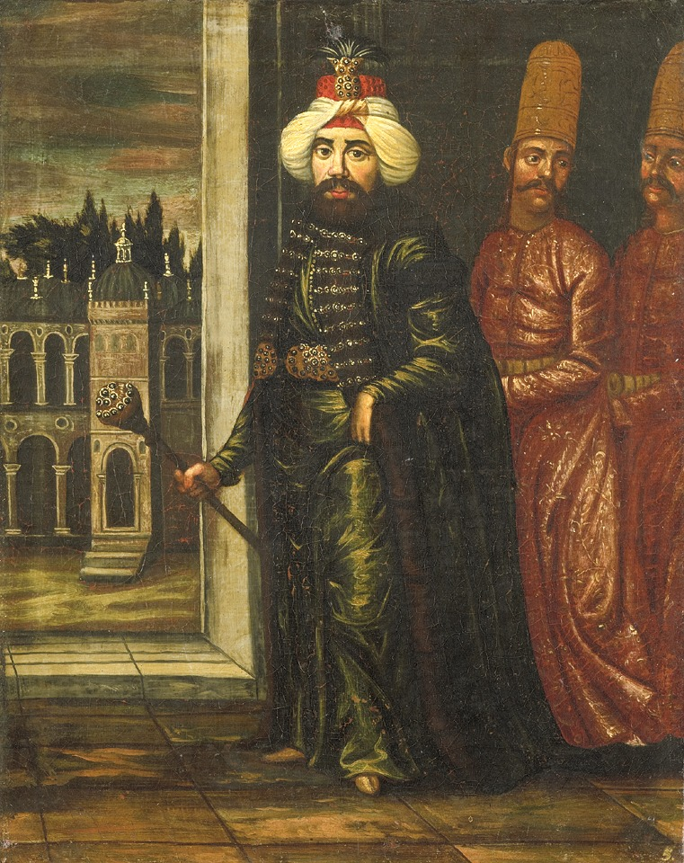
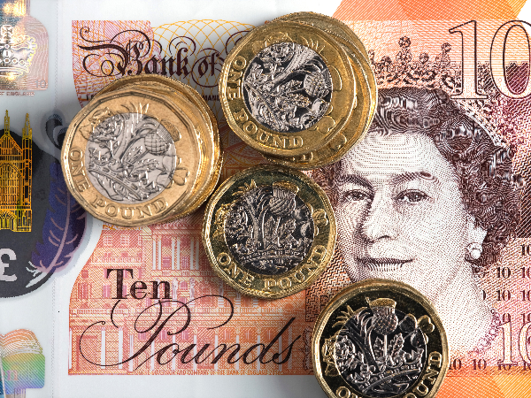
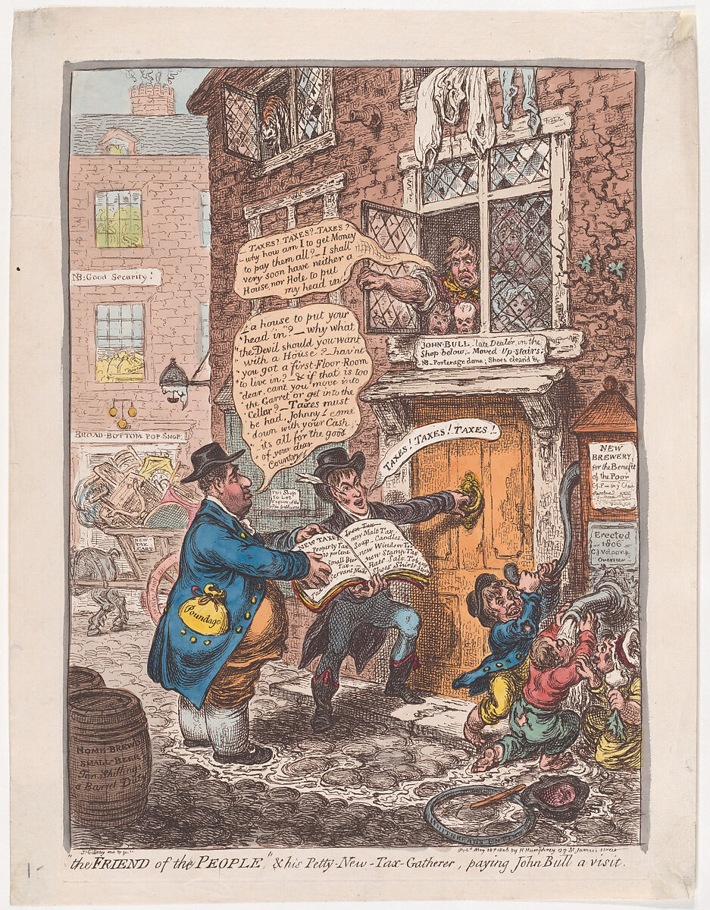
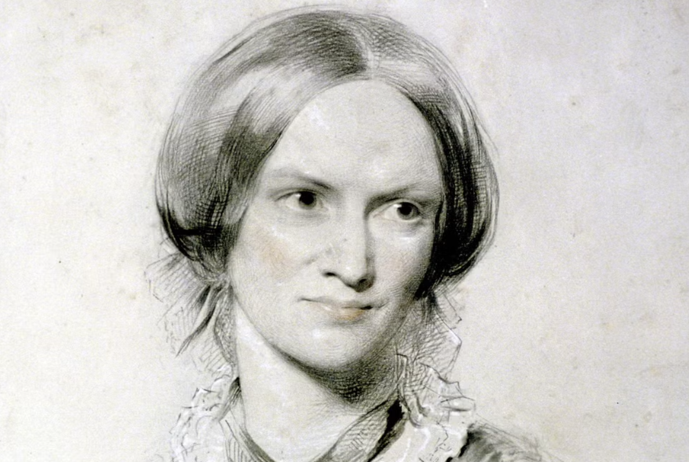
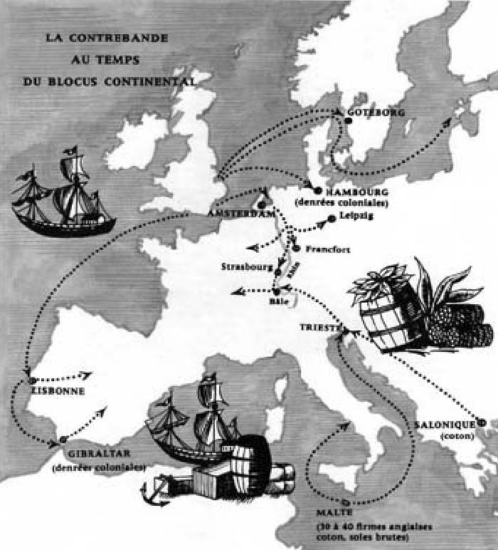

휴전 (9) - 우리한테 병력이 없지 돈이 없겠나?
게시: 2023-08-28T06:30:58+09:00
오스트리아의 이런 움직임은 연합군 사령부에 와 있던 영국인들에게도 결국 포착되었습니다. 주프로이센 대사 자격으로 현장에 있던 스튜어트 장군은 6월 6일, 이런 상황을 알리는 편지를 본국에 보냈고, 외무부 장관인 캐슬레이는 한참 말을 달려 북부 독일의 항구를 통해 전달된 이 편지를 6월 22일에야 받아볼 수 있었습니다.

(제3대 런던데리(Londonderry) 후작 스튜어트(Charles William Stewart)의 초상화입니다. 1813년 이후 프로이센 주재 영국 대사로서, 이후 오스트리아 주재 영국 대사로 활약하며 나폴레옹의 몰락에 한몫 했습니다.)

(윗 그림 속 스튜어트가 입고 있는 자켓은 영화 MI7 Dead Reckoning에서 맨티스가 입고 설친 자켓이기도 합니다. 이 자켓을 부르는 일반 명사는 돌만(Dolman) 자켓입니다. 18~19세기 경기병(husaar)들의 제복으로 애용된 돌만 자켓의 특징은 타이트한 핏팅과 화려한 매듭장식(braid, passementerie)이 특징입니다. 별 거 없지만 멋에 살고 뽕에 죽던 당시 경기병들의 특성을 잘 보여주는 군복이지요.)

(그러나 이 화려한 군복의 기원도 역시 튀르키에입니다. 원래 오스만 투르크의 상의인 돌라만(dolaman)을 헝가리인들이 따라 입기 시작한 것이 16세기 이후 유럽으로 퍼져나간 것입니다.) 당연히 영국에서는 난리가 났습니다. 영국이 여태까지 러시아와 프로이센에게 돈과 무기를 쏟아부었던 것이 이런 노골적인 찬밥 대접을 받기 위한 것은 아니었으니까요. 분노한 캐슬레이는 나폴레옹과의 협상은 반드시 오스트리아의 중재만을 거쳐야 한다는 조건을 거부하고 나폴레옹과의 평화 협상에 참석할 협상단도 파견하지 않기로 했습니다. 그는 스튜어트와 같은 곳에 있던 주러시아 영국 대사인 캐쓰카트 장군에게 편지를 보내 영국을 제외한 대륙 평화안이 이루어지지 않도록 경계할 것을 지시했습니다. 그러나 이런 반응은 영국이 메테르니히의 의도대로 놀아나는 것에 불과했습니다. 결과적으로는 영국이 이 평화 협상에서 자발적으로 완전히 배제된 결과를 낳았으니까요. 영국이 이렇게 찬밥 대접을 받은 것은 프랑스를 살려두어야 러시아를 견제할 수 있고, 그렇게 힘의 균형이 이루어져야 유럽에 평화가 올 수 있는데, 영국은 반드시 경쟁자인 프랑스를 몰락시키기를 원할 테니 영국을 배제시켜야 한다는 메테르니히의 큰 그림 때문이었습니다. 그러나 그 외에도 큰 이유가 있었습니다. 바로 영국이 연합군 측에 발휘할 수 있는 영향력은 총검이 아니라 파운드 스털링(sterling) 밖에 없다는 것이었습니다.

(영국의 화폐는 USD, JPY, KRW과 같은 이니셜로 표시할 때는 GBP라고 합니다만, 정식 명칭은 British pound sterling입니다. 무게 단위로서의 파운드와 구별하기 위해서지요. 원래 약 775년 경에 색슨 왕국들 사이에서는 1파운드의 은 덩어리 하나로 240개의 은화를 만드는 것이 표준이었는데 그런 동전을 'sterling'이라고 불렀다고 합니다. 그래서 큰 돈은 '파운드 단위의 스털링'으로 지급이 되었는데, 그게 줄어들다 그냥 '파운드 스털링'이 되었다고 합니다.) 그나마 그런 재정 지원도 그다지 시원시원한 편은 아니었습니다. 영국도 당시 경제 상황이 매우 좋지 않았는데, 가장 큰 이유는 역시나 나폴레옹의 대륙봉쇄령으로 인한 무역 부진이었습니다. 공장 물건 수출이 잘 안 되니 실업이 늘고 수입이 줄어들었는데, 설상가상으로 유럽 대륙의 값싼 곡물도 수입이 끊기니 식품 가격이 껑충 뛰어서 그렇쟎아도 힘든 서민들의 삶은 더욱 피폐해졌습니다. 그러나 그런 것들 위에 결정적인 한 방이 기다리고 있었습니다. 바로 세금이었습니다. 그렇게 어려운 경제 환경에서도 전쟁을 하고 대륙의 연합군에게 재정 지원을 해야 하니 영국 정부는 소득세라는 전에 없던 세금까지 만들어 일반 노동자들에게까지 세금을 뜯어갔습니다. 기존의 세금은 재산에 매기는 재산세와 상품에 매기는 소비세 위주였거든요. 그래서 영국군은 모병제인데도 병정 모집에 어려움은 별로 없었습니다. 전쟁터로 즉각 끌려가 총알을 맞는다 해도 당장 굶는 것이 더 참혹한 일이었거든요. 가령 당시 유행하던 '그린필드 마을의 존'(Jone O’Grinfelt)이라는 랭카셔(Lancashire) 지방의 풍자시에서, 주인공인 존이라는 남자는 아내를 버리고 멀리 떠나 군인이 되겠다고 선언하는데. 이유는 1주일에 2일은 꼬박 굶어야 하는 가난 때문이었습니다. 우스운 부분은 평생 랭카셔 지방은 커녕 동네를 떠나본 적이 없던 존은 외국이라고 하면 옆 지방인 요크셔(Yorkshire) 밖에 없었기 때문에, 거기 가서 프랑스군과 싸우겠다고 선언하는 것입니다. 그런 어려움은 당대의 소설에도 반영됩니다. 샬럿 브론테(Charlotte Brontë)가 1849년에 출간한 소설 'Shirley, A Tale'의 배경은 1811년~1812년인데, 그 내용은 나폴레옹 전쟁 탓에 공장 경영이 어려워진 사장이 노동자들을 가차 없이 해고하고 노동력 절감을 해준다는 기계를 들여놓는데 그걸 러다이트 폭동에 가담한 노동자들이 때려부수는 등 사회 경제적 혼란과 난관으로 인해 벌어지는 비극입니다.

("인민의 친구인 새 하급 세금징수원이 John Bull(영국을 의인화한 인물)을 방문하다"라는 제목의 1818년 만화입니다. 당시 유명 만화가였던 James Gillray의 작품입니다.)

(샬럿 브론테의 초상화입니다. Shirley, A Tale이라는 소설은 샬럿 브론테가 '제인 에어' 바로 다음에 내놓은 두 번째 소설입니다. 생각해보면 브론테는 영국 여자인데 왜 Brontë라는 프랑스스러운 이름을 가지게 되었나 궁금한데, 혹시 브론테도 루이 14세 때 프랑스를 탈출한 개신교인 위그노 가문 출신인가 싶어서 찾아봤습니다. 아니더군요. 그의 아버지 Patrick Brunty는 원래 가난한 아일랜드 가문 출신이었지만 북아일랜드에서 영국화되어 국공회의 목사가 된 사람입니다. 그가 영국에서 신학 공부를 하는 동안 이름의 스펠링을 Brunty에서 Brontë로 바꾸었다는데, 여러가지 가설이 있지만 (1) 아일랜드 출신이라는 것을 감추고 뭔가 세련된 느낌을 주려고 그랬다 (2) 웰링턴 공작의 직함 중에 시실리 섬에 있는 Bronte라는 마을의 이름을 따서 Duke of Bronte라는 것도 있었는데, 그렇게 이름을 바꿈으로써 마치 자신이 웰링턴 공작과 먼 인척 관계에 있는 것처럼 보이고 싶었기 때문이다 등의 설이 가장 그럴싸 하답니다.) 영국은 이렇게 어려운 상황 속에서도 연합군에게 1813년 춘계 작전을 시작하면서 연합군에게 총합 200만 파운드를 전쟁 보조금으로 지급하기로 약속한 바 있었습니다. 영국은 간단하게 16만 병력을 동원하기로 한 러시아가 그 중 2/3를 갖고, 8만을 동원하기로 한 프로이센가 1/3을 갖는 것으로 조정을 했습니다. 뿐만 아니라 러시아에게는 발트 해에서 활동할 러시아 함대 지원 비용으로 50만 파운드를 추가로 지급하기로 했고, 오스트리아에게는 병력 수에 무관하게 참전만 해주면 50만 파운드를 주겠다고 제시했습니다. 총 300만 파운드 짜리 패키지를 한 방에 내놓은 것입니다. 이것이 연합군이나 오스트리아에게는 거절하기엔 너무나 큰 돈이었을까요? 꼭 그렇지는 않았습니다. 처음에 러시아의 알렉산드르는 그런 조건이 달린 돈은 필요없다면서 받지 않으려고 하기도 했습니다. 사실 그렇게까지 막대한 금액은 아니었기 때문이었습니다. 이베리아 반도에서 3~4만의 병력을 데리고 작전을 수행하던 웰링턴은 매달 20만 파운드가 필요하다고 본국에 보고한 바가 있었을 정도였으니까요. 이렇게 총액 300만 파운드는 20만이 넘는 대군을 운용하기에는 턱도 없이 부족한 돈이었으므로 당연히 물주인 영국의 영향력도 제한적일 수밖에 없었습니다. 그래서 영국은 물주로서의 체면을 살리기 위해서, 추가적인 재정 지원을 원하는 러시아의 요청에 따라 동맹 어음(federative paper)이라는 것을 발행하기로 약속했습니다. 이는 오로지 군비로만 사용하기 위해 발행되는 일종의 채권이었는데, 이 어음의 총액은 5백만 파운드로 제한하고 이자는 5%로 하되, 평화 조약 체결 이후 6개월 후 혹은 그때까지 평화가 이루어지지 않는다면 1815년 7월 1일부터 상환되는 것으로 정했습니다. 결국 러시아와 프로이센이 전쟁에 쓸 돈을 일단 수표로 끊어준다는 이야기인데, 언젠가는 상환해달라고 날아올 그 수표에 대한 지급은 누가 해주는 것이었을까요? 당연히 물주인 영국일 것이라고 생각하겠지만 그건 또 아니었습니다. 영국도 금고가 텅 비어 당시로서는 은행의 신용 유지를 위해 너무나 당연한 전제조건이었던 금태환을 중지시킬 정도로 어려운 상황이다보니, 그 금액을 모조리 떠맡을 수가 없었습니다. 그래서 긴 협상 끝에, 그 5백만 파운드의 절반만 영국이 부담하고 러시아가 1/3, 프로이센이 1/6을 부담하기로 했습니다. 아마도 나머지 1/6은 오스트리아나 스웨덴 등의 미래의 다른 동맹국에게도 부담시켜려 했던 모양인데, 아직은 불확실하므로 그걸 명기하지 못했고 대신 절대로 영국은 자기가 맡은 1/2 이상은 책임지지 않는 것으로 못을 박았습니다. 이 동맹 어음의 발행 목적 중 하나가 영국의 체면도 있었는데, 이런 구차한 조건은 사실 체면을 깎아먹는 일이긴 했습니다. 하지만 영국이 아무리 바다 위에서 고생하고 먼 스페인에서 피를 흘린다고 징징거려도, 러시아와 프로이센에게 있어서 결국 영국은 피 한 방울 흘리지 않고 대륙의 동맹국들에게만 더 피터지게 싸우라고 부추기는 얄미운 존재였습니다. 그런 얄미운 동맹은 돈이라도 시원시원하게 내야 한다는 것이 러시아와 프로이센의 생각이었고, 결국 앞선 약속에도 불구하고 연합군은 5백만 파운드 전액을 영국이 부담하라고 요구했습니다. 하지만 영국도 땅 파서 장사하는 것이 아니었습니다. 캐슬레이는 5백만 파운드의 동맹 어음을 모조리 영국이 부담하라는 요구에 펄쩍 뛰면서 오히려 연합군에게 영국에게 통상을 완전 개방하라고 요구했습니다. 그래야 영국이 지급하는 보조금을 조금 더 유리한 환율로 환전할 것 아니냐는 핑계와 함께, 영국도 통상을 해야 보조금을 지급할 재원을 마련할 수 있는데 각종 무역 규제와 고율의 관세를 영국 상품에 부과하면서 그런 보조금이 나오기를 바라는 것은 비현실적이라고 지적질하는 것도 서슴치 않았습니다. 실제로 함부르크가 다부에게 점령되면서, 당장 북부 독일을 통해 밀수되던 영국 상품의 판로가 막혔고, 이는 영국 통상에 큰 타격이 되었던 것입니다. 알고 보면 나폴레옹이 작센 땅에서 혈전을 벌이면서도 자신의 에이스인 다부를 멀리 떨어진 함부르크에 보냈던 이유가 있었던 것입니다.

(나폴레옹에게 대륙 봉쇄령이 있다면 영국에게는 바다를 통한 밀수가 있었습니다. 위 그림은 영국 상품이 주로 밀수되던 통로를 보여줍니다. 보시다시피 함부르크는 내륙 수로인 엘베 강을 직접 접하는 매우 중요한 관문이었습니다. 관세가 붙지 않는 영국 상품은 세관원들을 매우 효과적으로 설득할 수 있는 뇌물을 만들어낼 만큼 수지가 맞는 장사였으므로, 나폴레옹이 네덜란드 국왕으로 앉혀 놓은 자신의 동생 루이조차도 네덜란드의 경제를 위해 영국제 상품을 적극적으로 단속하지 않았습니다.)
이렇게 징징거리는 영국의 읍소가 어느 정도 통해서, 동맹 어음 문제는 결국 원안과 크게 다르지 않게 총액 한도를 250만 파운드로 줄이는 대신 전액을 영국이 부담하는 것으로 마무리되었습니다. 이 동맹 어음에도 영국의 조건이 달렸습니다. 그 대가란 러시아와 프로이센은 각각 절대 프랑스와 개별 평화협정을 맺지 않을 것이라는 약속과 함께, 프로이센이 탐내던 하노버(Hanover)는 영국 왕실의 소유임을 분명히 한다는 것이었습니다. 이렇게 없는 살림에 돈을 뿌려대며 연합군에 영향력 확대를 꾀하던 영국은 과연 메테르니히의 계략을 분쇄하고 나폴레옹과 대륙 연합군 간에 평화 협정이 이루어지는 것을 막을 수 있었을까요? Source : The Life of Napoleon Bonaparte, by William Milligan Sloane Napoleon and the Struggle for Germany, by Leggiere, Michael V https://www.britannica.com/money/pound-sterling https://www.bl.uk/romantics-and-victorians/articles/the-impact-of-the-napoleonic-wars-in-britain https://en.wikipedia.org/wiki/Jone_o_Grinfilt https://www.metmuseum.org/art/collection/search/391820 https://www.independent.co.uk/arts-entertainment/books/features/the-victorians-regarded-charlotte-bronte-as-coarse-and-immoral-and-deplored-jane-eyre-a6923616.html https://en.wikipedia.org/wiki/Shirley_(novel) https://en.wikipedia.org/wiki/Bront%C3%AB_family